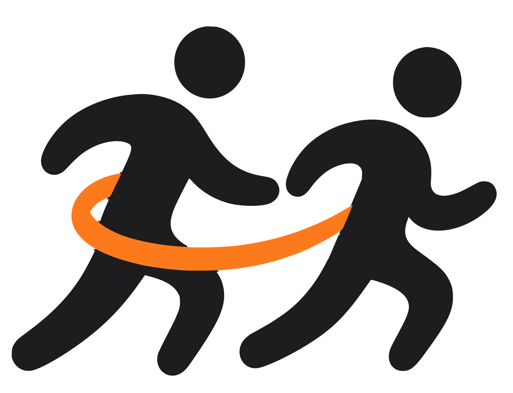

为什么需要陪跑员
你每周都在跑。
有人也想跑，只差一个看路的人。
下次，握住这根绳。
陪跑员要做的，就这几件事。
- 开跑前
- 先问清四件事：跑了多久，跑的时候最难的是什么，有没有特殊装备，这次想跑到什么程度。
- 转弯
往左我就拉一下，往右，我就顶他手臂一下。
一位资深陪跑员这样说。动作要小，拉得太猛反而会让人失去平衡。- 路面
- 碎石、减速带、井盖，先用一句话说清楚，再一起慢慢过去。
- 节奏
- 牵引绳突然绷紧，说明你们步调不一致了。该调整的是你，节奏跟着跑者。
谁可以当陪跑员
你不用是专业运动员。会跑步，能准时到，在 App 里学完两门必修课（大约 18 分钟），就可以开始陪跑。
接单之前，我们会先确认你是谁。
实名认证
填身份证姓名和号码，再对着手机眨眼、点头，完成活体检测。
人工审核
上传证件，工作人员审核通过后才能接单。
必修培训
两门必修课：「陪跑基础」和「突发情况处置」，图文课加情景选择题。
打开接单
附近有人约跑时，App 会同时邀请三位陪跑员，谁先接就是谁。
跑的时候，不只有你们两个人。
- 走散提醒
- 两人距离超过 100 米，两边手机都会提醒，客服同时收到通知。
- 一键求助
- 跑者一键求助后，短信会发给事先设好的紧急联系人。陪跑员不能撤销这条求助。
- 号码
- 接单以后才看得到对方的完整手机号，跑完就看不到了。